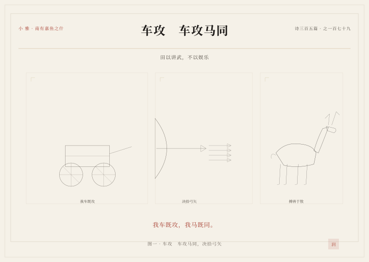
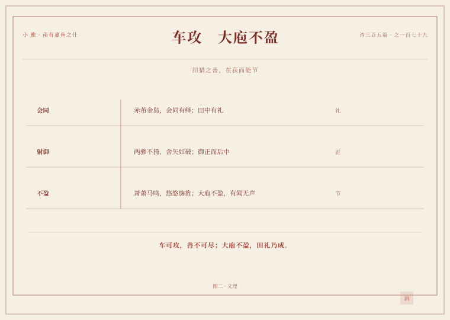

第一百七十九篇 车攻
小雅 · 南有嘉鱼之什 SJ179
朗读 · 普通话
依经文原文朗读，章次不读出；配古琴底乐，不改速、不加拖腔。全库同一音色（豆包 TTS），非播音员录制。
一 解题
诗三判：
- 谁在说：叙宣王东都会同、田猎讲武之人。我车既攻，我马既同；四牡庞庞，驾言徂东。
- 说什么事：八章。前四章写车马、田车、苗猎、会同；后四章写射御、马鸣、军纪、大成。
- 为何编在此：采芑南征，车攻东狩；南征以威，东狩以礼。
小雅武功，至此入礼。
《毛序》：「《车攻》，宣王复古也。宣王能内修政事，外攘夷狄，复文、武之竟土，修车马，备器械，诸侯复宗周焉。」
朱子《诗集传》：「赋也。攻，坚也。同，齐也。庞庞，充实也。徂东，往东也。」二章：「田车，猎车。阜，大。甫草，甫田之草。苗，夏猎也。」三章：「选徒，选车徒。嚣嚣，声众。旐，龟蛇旗。旄，旄牛尾旗。敖，地名。」四章：「奕奕，盛。赤芾，朱蔽膝。金舄，金饰履。会同，诸侯会。绎，连属。」五章：「决，扳指。拾，臂鞲。佽，利。调，和。射夫，射手。同，合。举柴，积禽。」六章：「四黄，四黄马。两骖，两旁马。猗，偏。驰，御法。舍矢，放矢。破，中。」七章：「萧萧，马鸣。悠悠，旌动。徒御，步卒御者。不惊，不喧。大庖，天子庖厨。不盈，不充满。」八章：「有闻无声，有声誉无喧声。允，信。展，诚。大成，大成。」
本库的看法：《车攻》不是一首田猎诗，是一首「以田猎讲武、以不盈见礼」的诗。
车攻马同，是器备；四牡庞庞，是马壮；东有甫草，是地；会同有绎，是诸侯；决拾既佽，是射；舍矢如破，是中；萧萧马鸣，悠悠旆旌，是静；大庖不盈，是节；有闻无声，是纪。田猎之善，不在获多，在获而能节。
须辨：攻是坚，不是攻击；同是齐，不是相同；庞庞是充实，不是庞大；甫草是甫田之草，不是甫草地名；苗是夏猎，不是禾苗；举柴是积禽，不是举柴火。断语：车可攻，兽不可尽；大庖不盈，田礼乃成。
先辨五事：「攻」是坚固，不是攻击；「同」是齐一，不是相同；「庞庞」是充实，不是庞大；「甫草」是甫田之草，不是地名；「苗」是夏猎，不是禾苗。
二 经文
第一章
我车既攻，我马既同。四牡庞庞，驾言徂东。
第二章
田车既好，四牡孔阜。东有甫草，驾言行狩。
第三章
之子于苗，选徒嚣嚣。建旐设旄，搏兽于敖。
第四章
驾彼四牡，四牡奕奕。赤芾金舄，会同有绎。
第五章
决拾既佽，弓矢既调。射夫既同，助我举柴。
第六章
四黄既驾，两骖不猗。不失其驰，舍矢如破。
第七章
萧萧马鸣，悠悠旆旌。徒御不惊，大庖不盈。
第八章
之子于征，有闻无声。允矣君子，展也大成。
三 韵读
- 一章：攻、同、庞、东，东部相叶。声坚。
- 二章：好、阜、草、狩，幽部相叶。声厚。
- 三章：苗、嚣、旄、敖，宵、幽相叶。声喧。
- 四章：奕、舄、绎，铎部相叶。声盛。
- 五章：佽、调、同、柴，脂、宵相叶。声利。
- 六章：驾、猗、驰、破，歌部相叶。声疾。
- 七章：鸣、旌、惊、盈，庚部相叶。声静。
- 八章：征、声、子、成，庚部相叶。声大。
读法：前六章声由坚而厚而喧而盛而利而疾，七章忽「萧萧」「悠悠」，声静；八章「有闻无声」，声收。一静收六动，是诗之妙。
四 字义与名物
- 攻：坚固。同：齐一。庞庞：充实。徂东：往东。
- 田车：猎车。阜：大。甫草：甫田之草。狩：冬猎，此泛田猎。
- 苗：夏猎。选徒：选车徒。嚣嚣：声众。旐：龟蛇旗。旄：旄牛尾旗。敖：地名。
- 奕奕：盛。赤芾：朱蔽膝。金舄：金饰履。会同：诸侯会同。绎：连属。
- 决：扳指。拾：臂鞲。佽：利。调：和。射夫：射手。同：合。举柴：积禽。
- 四黄：四黄马。两骖：两旁马。猗：偏。驰：御法。舍矢：放箭。破：中。
- 萧萧：马鸣。悠悠：旌动。徒御：步卒与御者。不惊：不喧。大庖：天子庖厨。不盈：不充满。
- 有闻无声：有声誉无喧声。允：信。展：诚。大成：大成。
五 今译
一章：我车既坚，我马既齐。四牡充实，驾而往东。
二章：猎车既好，四牡甚大。东有甫田之草，驾而行猎。
三章：那人夏猎，选车徒声众。建龟蛇旗，设旄牛旗，搏兽于敖。
四章：驾那四牡，四牡盛。朱蔽膝，金饰履，诸侯会同连属。
五章：扳指臂鞲既利，弓矢既和。射手既合，助我积禽。
六章：四黄既驾，两骖不偏。不失御法，放矢而中。
七章：萧萧马鸣，悠悠旌动。步卒御者不喧，天子庖厨不盈。
八章：那人出征，有声誉无喧声。信哉君子，诚哉大成。
六 章旨
- 一章：车坚马齐，是「器备」；器不备，则田不成。
- 二章：田车好，四牡大，是「地备」；地不辟，则狩不行。
- 三章：选徒嚣嚣，是「众备」；建旐设旄，是「旗备」；众与旗，是田之容。
- 四章：赤芾金舄，是「服」；会同有绎，是「礼」；田猎中有会同。
- 五章：决拾弓矢，是「射具」；举柴，是「获」；射以合礼，不以争。
- 六章：两骖不猗，是「御正」；舍矢如破，是「中」；御正而后射中。
- 七章：马鸣旌动，是「静」；大庖不盈，是「节」；获而不盈，是田之礼。
- 八章：有闻无声，是「纪」；允君子，展大成，是「成」；田猎之成，在无声。
七 诗教
- 田以讲武：车攻马同、选徒、射御，皆武事；田猎不是娱乐，是讲武。
- 获而有节：大庖不盈，是不尽取；尽取，则田成暴。
- 军纪在静：萧萧马鸣，悠悠旆旌，而徒御不惊；静，是军之至整。
八 分寸与边界
- 不把「攻」读成攻击：攻是坚；读成攻，则「我车既攻」成攻车。
- 不把「同」读成相同：同是齐一；读成同，则马不必齐。
- 不把「甫草」读成地名：甫草是甫田之草；读成地名，则「东有」无草。
- 不把「苗」读成禾苗：苗是夏猎；读成苗，则「于苗」成种田。
- 不把「举柴」读成举柴火：举柴是积禽；读成柴火，则田猎成烧火。
九 存疑
- 诗旨：毛序「宣王复古」，朱子从之；一说「美宣王田猎」。本库从复古讲武。
- 「甫草」：毛传「甫，大也；草，甫田之草」；从甫田之草。
- 「苗」：毛传「夏猎曰苗」；从夏猎。
- 「举柴」：毛传「积禽也」；从积禽。
- 「有闻无声」：毛传「有声誉，无喧哗」；从声誉。
十 跨典
- 《诗经·小雅·吉日》「吉日维戊」；此篇车攻，同是田猎。
- 《礼记·王制》「天子诸侯无事，则岁三田」；此篇苗、狩，是岁田。
- 《论语》「不射宿」；此篇大庖不盈，是节取。
十一 双卡与图
六对：
| 攻（坚固） |
攻（攻击） |
| 同（齐一） |
同（相同） |
| 庞庞（充实） |
庞庞（庞大） |
| 甫草（甫田之草） |
甫草（地名） |
| 苗（夏猎） |
苗（禾苗） |
| 举柴（积禽） |
举柴（举柴火） |

图一 · 车攻 车攻马同，赤芾金舄

图二 · 车攻 大庖不盈，有闻无声